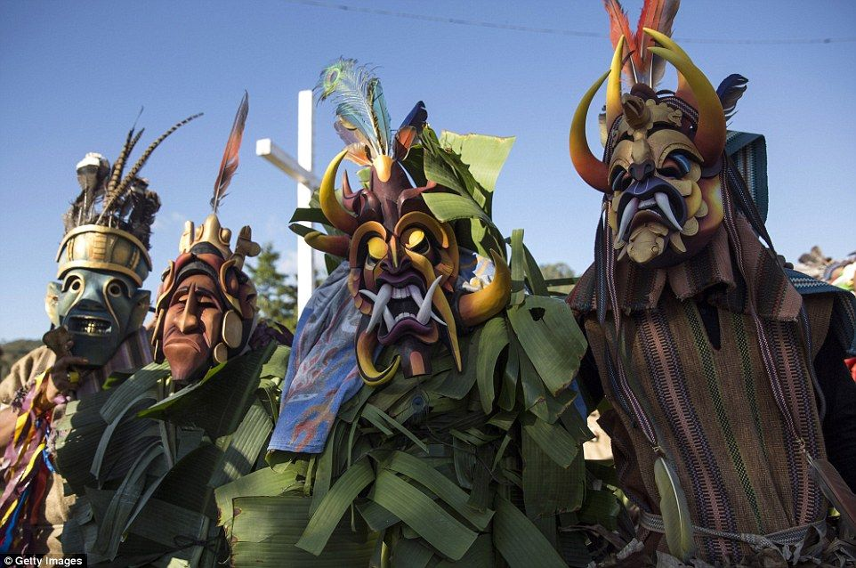
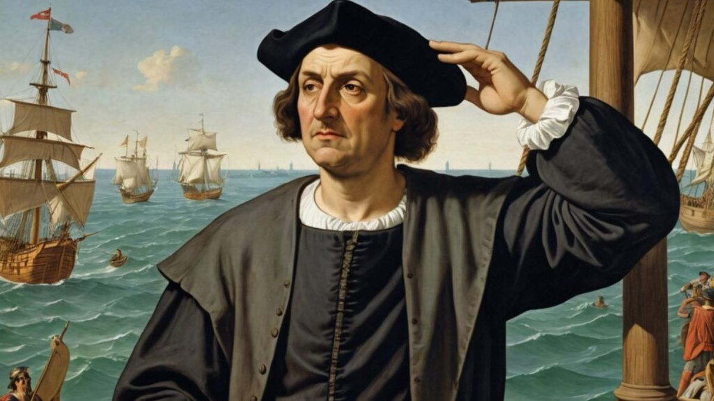
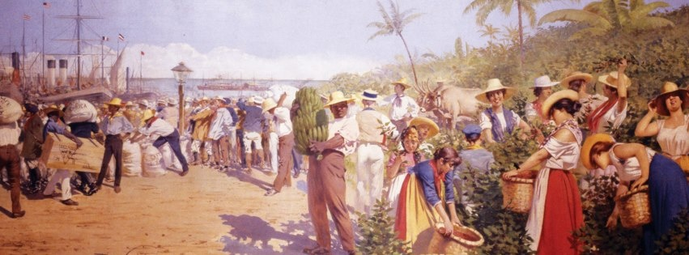
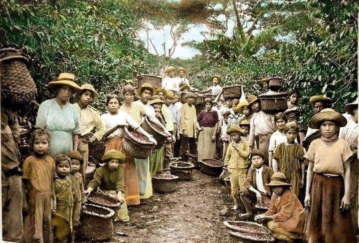
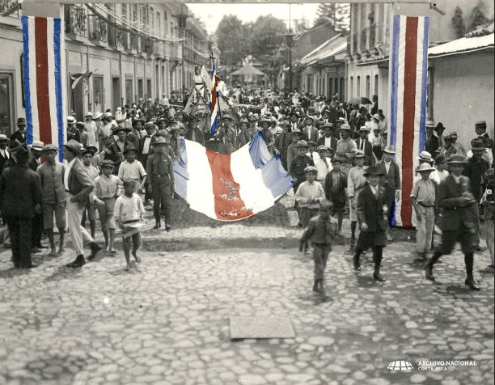
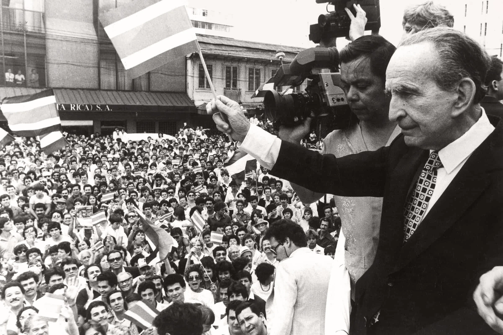
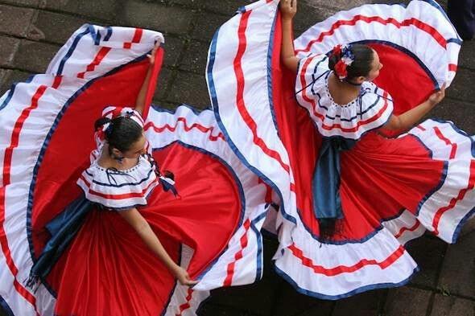

A história da Costa Rica é uma jornada de transformação. Dos povos originários à independência, passando pela abolição do exército e pela construção de uma das democracias mais estáveis da América Latina, cada capítulo ajudou a formar o país conhecido hoje pela paz e pela sua vasta natureza selvagem
Viagem no tempo em Costa Rica
Os povos originais
Muito antes da chegada dos europeus, a Costa Rica já era lar de diversos povos indígenas, como os borucas, bribris, cabécares, malekus e chorotegas. Eles viviam da agricultura, da pesca e do artesanato, deixando um legado cultural que permanece vivo até hoje.

1502
O Colonizador
Durante sua quarta viagem às Américas, Cristóvão Colombo chegou ao litoral da atual Costa Rica. Os exploradores acreditavam que encontrariam grandes riquezas na região, dando origem ao nome "Costa Rica". No entanto, o ouro era escasso, e a colonização aconteceu de forma lenta. Além disso, a resistência dos povos indígenas e o relevo montanhoso dificultaram o avanço dos colonizadores.

1573–1821
Período Colonial
Durante quase 300 anos, a Costa Rica fez parte do Império Espanhol e era administrada pela Capitania-Geral da Guatemala. Diferentemente de outras colônias americanas, o território não possuía grandes minas de ouro ou prata, nem utilizava intensamente o trabalho escravizado em grandes plantações. Por isso, a economia baseou-se principalmente na agricultura familiar, formando uma sociedade relativamente mais igualitária do que a de outros países da região.

Sec. XIX
O Grão de Ouro
Durante o século XIX, o cultivo do café transformou completamente o país. Conhecido como o "grão de ouro", ele impulsionou a economia, fortaleceu o comércio e permitiu investimentos em estradas, escolas e cidades. Pouco tempo depois, a produção de banana também passou a ser uma importante fonte de renda.

1821
Uma nova nação
No dia 15 de setembro de 1821, a Costa Rica conquistou sua independência da Espanha, junto com outros países da América Central. Nos anos seguintes, integrou o Primeiro Império Mexicano e, posteriormente, a Federação das Províncias Unidas da América Central. Em 1838, tornou-se oficialmente uma república independente, iniciando a construção de seu próprio sistema político e econômico.

1948
Um país sem exército
Um dos acontecimentos mais marcantes da história costarriquenha ocorreu em 1948, após uma breve guerra civil. No ano seguinte, a nova Constituição aboliu definitivamente o exército. Desde então, os recursos que seriam destinados às forças armadas passaram a ser investidos em educação, saúde e bem-estar da população. Essa decisão tornou a Costa Rica conhecida mundialmente como um símbolo de paz.

Costa Rica hoje
Ao longo de sua história, a Costa Rica enfrentou desafios, conquistou sua independência, fortaleceu sua democracia e fez escolhas que moldaram sua identidade. Hoje, é reconhecida por sua estabilidade política, pelo compromisso com a paz e pela valorização da educação. Seu passado mostra que o desenvolvimento de uma nação pode ser construído por meio do diálogo, da cooperação e de investimentos na qualidade de vida de sua população.
